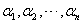
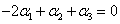

3.2 线性相关与线性无关
前言
|
上一节，讨论了在单个向量与某个向量组之间的一种线性关系，即能否线性表出的关系，本节将讨论在一个向量组中向量之间的线性关系，这就是向量组的线性相关性。 |
一、线性相关性概念
|
对给定的n维向量组
说明：（1）定义中“否则”说明，任何向量组就分成“线性相关”和“线性无关”两大类。 （2）“否则”的含义，即是指，任意一组不全为零的数，都不能使
|
| 几个特殊情况： （1）任意一个含有零向量的向量组必为线性相关。 （2）单个向量 （3）两个非零的n维向量线性相关 （4）n维标准向量组 |
二、线性相关性的判定及相关系数的求法
|
对给定的n维向量组
由定理2.1，可得出两个重要推论： 推论1n个n维列向量线性无关， 推论2当时，m个n维向量 简言之，个数大于维数的向量组必线性相关。例如，个 |
|
例1：判定向量组的线性相关性。 解：设齐次线性方程组，即 由向量相等就是对应分量相等，得到 其系数行列式，所以此线性方程组只有零解，于是 说明：本题虽给出的是三个3维行向量，但由向量相等得到的方程组与列向量组成方程组是一样的，所以，我们今后即使碰到行向量，都把它转置，按列向量来处理。 |
|
例2：已知向量组试讨论其线性相关性。 解：构造矩阵，由于是求解线性方程组，故对A只能作初等行变换，化成简化阶梯形矩阵。 因，所以方程组 方程组的一般解为 令，得一个解为 那末即为一组相关系数，即有 |
|
例3：若 证：考虑方程组，即 经整理，得 因为 由行列式，即线性无关。 |
三、线性相关性的若干基本定理
|
首先介绍在“线性相关”与“线性表出”之间有以下重要定理：
本定理完全说明了向量组线性相关的本质，所谓“线性相关”，即是“向量组中向量在线性运算下相互之间有关系”，而这个“有关系”就是指“至少有一个向量可以用其余向量线性表出”。当然，向量组 |
证：由 说明：当把作为给定向量组时， 从而也就有“整体无关，部分也无关”，详细讲即为：若向量组 |
说明：本定理中向量组 例如，向量组是线性无关的，那么向量组也必为线性无关的。 |
请认真答题，测试一下你对前面知识点的学习情况！
(单选题) 13．若线性无关，则必有（ ）。
【答案】D
【解析】因为线性无关
所以为任意实数
【知识点】线性相关性的判定及相关系数的求法
请认真答题，测试一下你对前面知识点的学习情况！
(单选题) 14．设均为n维向量，又线性相关，线性无关，则下列正确的是( )
- A.线性相关
- B.线性无关
- C.可由线性表示
- D.
 可由线性表示
可由线性表示
【答案】C
【解析】由线性无关，故也线性无关
但有线性相关，所以可由线性表示，也就有可由 线性表示。故选（C）
线性表示。故选（C）
【知识点】线性相关性的若干基本定理